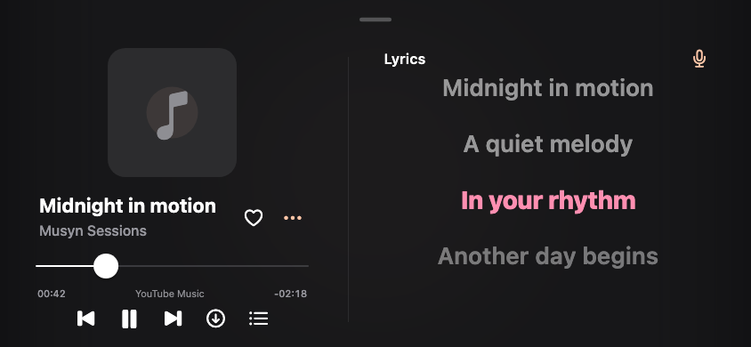

Music, in your rhythm.
Your music, beautifully in reach. YouTube Music, optional JioSaavn, synced lyrics and a library that travels with you.
Open source · iOS 15+ · Unsigned IPA · By Voryn Labs
· IPA downloads Loading public release statistics


A little more music. A little less friction.
- Choose your source
- YouTube Music works without a key. Add your own JioSaavn media URL key in Settings when you want another source. Clear AAC quality options, with no lossless claims.
- Keep the queue yours
- Play next, reorder, shuffle and save your favorites. Open the full player without losing your place.
- Your YouTube library
- Connect YouTube Music to sync liked music and playlists. Your local favorites remain available when a refresh fails.
- Read along
- Synced lyrics follow playback, with line seeking and a focused sing-along view where timestamps are available. Original vocals stay unchanged.
- Go offline
- Track and playlist downloads with progress, cancellation and retry. Search and sort what is saved.
A player with a little more presence.
Compact glass navigation on iOS 26. Animated album covers, found automatically.
Musyn matches your selected track against Apple’s public catalogue and album pages. When a suitable real animated cover is available, it is cached for the player and supported lock screen. No file import, extra account or artwork key is needed. Uncertain matches and albums without a clip keep their still cover.
Automatic artwork is enabled on supported systems unless you turn it off in Appearance. Glass navigation has its own switch. The player’s More menu also offers optional lock-screen lyrics: the current timed line appears in place of the artist. Offline mode, Reduce Motion, power settings and iOS remain in control.
Earlier iOS versions keep the standard player. Musyn does not extract Spotify Canvas or bundle an Apple Music catalogue token.

Made to keep the music in view.

Interface previews use fictional tracks and placeholder artwork. They are automated renders, not device playback screenshots.
Your iPhone. Your installer.
Musyn is distributed as an unsigned IPA. Use your own signing identity with a compatible installer, or import the IPA into a compatible LiveContainer version.
One Voryn Labs source includes both Cloudified and Musyn. Add it once to browse both apps in your installer.
Setup and release notes
-
Download and verify
Get Musyn.ipa and its SHA-256 file from the release. Sign with a compatible installer or import into LiveContainer. AltStore PAL cannot install this unsigned IPA.
-
Open Musyn
YouTube Music is ready without a key or account. Connect YouTube Music for your liked music and playlists. JioSaavn is optional: add a media URL key you are authorized to use in Settings → JioSaavn. Musyn supplies no provider key.
-
Save a track
Tap Download on the player using your saved default. Use Download options when you want a different source or quality. Follow progress, retry failures and find saved music in Library.
Manual source URL:
https://voryn-labs.github.io/source.json
App identity: com.vorynlabs.musyn. Physical iPhone playback, background transitions and installer behavior still need device acceptance. Background download resumption is not promised.
Yours to explore. Open to grow.
Musyn is maintained by Voryn Labs under GPL-3.0, with credits to the Musify lineage and BitChord design reference. YouTube Music and optional JioSaavn are the current sources; more providers can be introduced as the project grows. Music and artwork retain their owners’ rights. Availability varies by source and region.
Explore the source ↗ · Report an issue ↗ · Privacy · Terms of use
The counter sums public GitHub downloads of Musyn.ipa across currently published releases. Removed releases are excluded. It counts file requests, not people or verified installations. If GitHub is unavailable, no guessed count is shown.